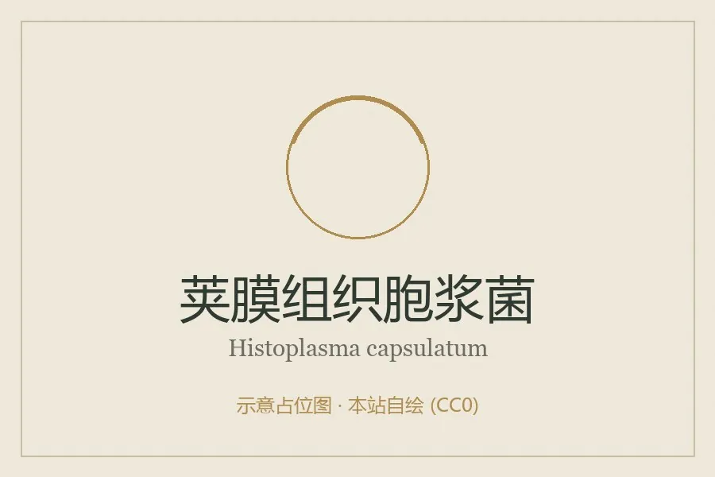

真菌 · 真菌界
荚膜组织胞浆菌 Histoplasma capsulatum

双相型真菌，菌落白色棉絮状，吸入鸟粪或蝙蝠粪便污染的孢子可致肺部感染，免疫低下者易发生播散。
- 分类
- 门子囊菌门纲散囊菌纲目散囊菌目科阿耶罗菌科属组织胞浆菌属
- 栖息环境
- 富含鸟粪与蝙蝠粪便的土壤，如鸽舍、洞穴、老树洞
- 地理分布
- 世界性分布，美洲河谷地区流行，中国各地有散发病例
- 保护级别
- 暂无评估；作为环境病原广泛存在
物种志
荚膜组织胞浆菌为双相型真菌：室温下呈菌丝相，菌落白色至淡黄、棉絮状，镜下产生大型的结节状大分生孢子与微小分生孢子；人体温度下转为酵母相，寄生于巨噬细胞内，细胞小、卵圆形，常被误认为“荚膜”的结构其实是收缩的细胞壁。
荚膜组织胞浆菌存在于富含鸟粪、蝙蝠粪便的土壤中，如鸽舍、洞穴、老树洞。人吸入被搅动的孢子后，多数无症状或仅轻度流感样表现，大量吸入可致急性肺炎；免疫低下者可发生播散性感染，累及肝脾、骨髓与肾上腺。它不会人传人。防治以减少粉尘暴露为主，清理鸽粪、探洞时戴口罩；治疗用伊曲康唑或两性霉素 B，重症需住院。
形态与习性
- 菌落菌丝相白色棉絮状，产结节状大分生孢子
- 双相性体内转为酵母相，寄生于巨噬细胞
- 来源鸟粪、蝙蝠粪便污染的土壤
- 感染途径吸入搅动的孢子，不人传人
- 临床表现流感样症状，重者肺炎或播散感染
- 防治清理鸽粪戴口罩，抗真菌治疗
趣味知识
- 它名字里的“荚膜”其实是标本制作时收缩的细胞壁，并非真正的荚膜。
- 清理鸽舍、探洞时扬起的粉尘是主要感染来源，戴口罩能显著降低风险。
- 多数感染者症状轻微甚至无症状，但免疫低下者可能播散到全身。
- 它寄生于巨噬细胞内部，能逃避免疫清除，这是其致病的关键。